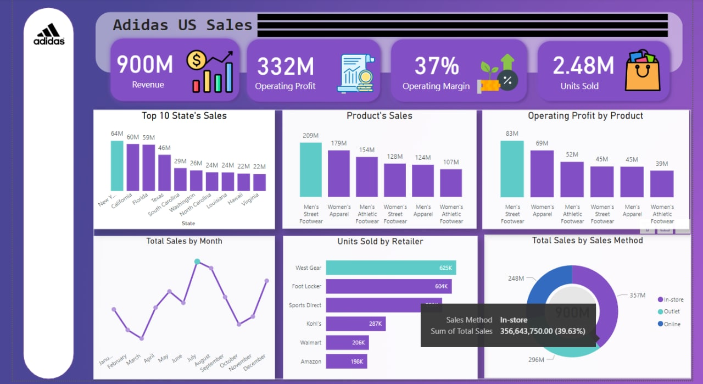

Murder rate dashboards in the USA provide visual representations of homicide data, offering insights into the frequency and patterns of such crimes. These dashboards typically include interactive maps, charts, and graphs that allow users to explore murder rates across different geographical areas, time periods, and demographic variables. They serve as valuable tools for law enforcement agencies, researchers, and policymakers in understanding and addressing the complex issue of violent crime.
.jpg) jan 28, 2023
jan 28, 2023
sales Dashboards
.jpg)
.jpg)
Supermarket sales dashboards offer a visual overview of sales data and performance metrics within a supermarket setting. These dashboards typically present information such as total sales, revenue, profit margins, top-selling products, and customer behavior. By providing real-time insights into sales trends, inventory levels, and customer preferences, supermarket sales dashboards enable managers and decision-makers to make informed choices regarding pricing, promotions, stock management, and marketing strategies. They help optimize operations, enhance customer satisfaction, and drive profitability in the competitive supermarket industry.
.jpg)
.jpg)
Market sales dashboards are tools that provide visual representations of sales data in a business or industry. These dashboards typically include charts, graphs, and tables that summarize sales performance metrics such as revenue, units sold, profit margins, and market share. They enable businesses to track sales trends, identify top-performing products or regions, monitor sales targets, and make data-driven decisions to optimize their sales strategies and drive business growth.
.jpg)
Domino's Pizza sales dashboards provide a visual representation of key sales metrics and performance indicators for the company. These dashboards typically include real-time data on metrics such as total sales, average order value, order volume, and customer demographics. They allow Domino's to monitor sales trends, identify top-selling products or regions, track promotional campaigns, and make data-driven decisions to optimize their sales strategies and drive business growth in the highly competitive pizza industry.

This project entails analyzing sales data for adidas products , covering various
products and regions in USA. It includes details like Retailer II), Invoice Date, Price
Units Sold, Total Sales, Profit, and Sales Method. The analysis provides valuable
insights for strategic decision-making and sales optimization